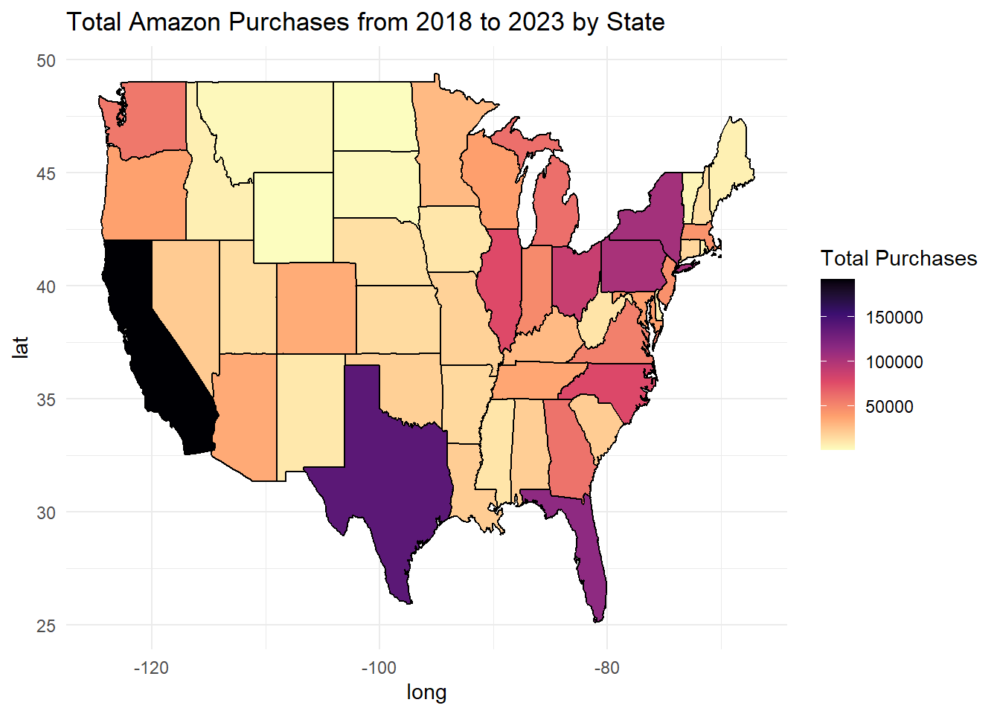
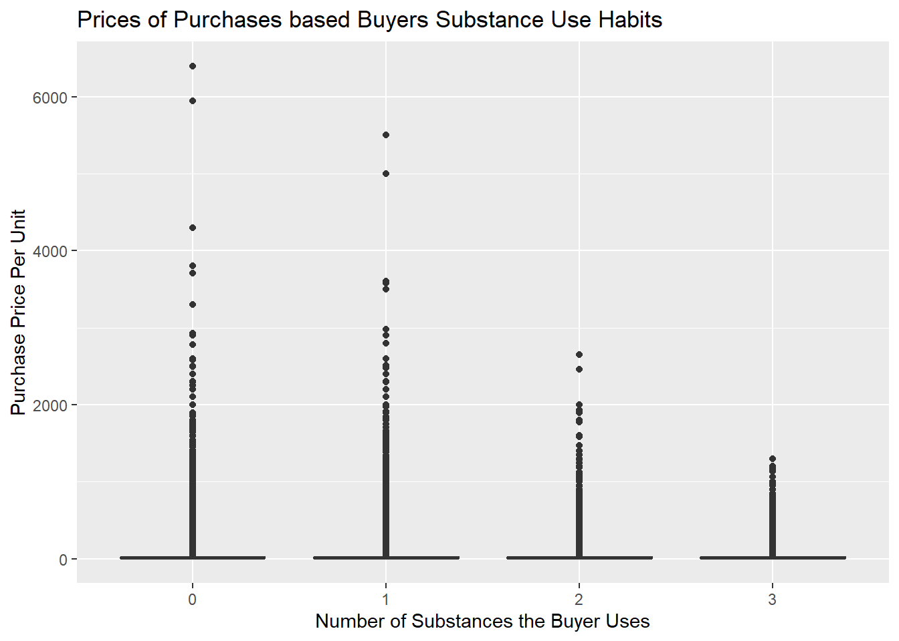

Warning: package 'readr' was built under R version 4.4.1
Code
purchase =read_csv("data/amazon-purchases.csv")
Rows: 1850717 Columns: 8
── Column specification ────────────────────────────────────────────────────────
Delimiter: ","
chr (5): Shipping Address State, Title, ASIN/ISBN (Product Code), Category,...
dbl (2): Purchase Price Per Unit, Quantity
date (1): Order Date
ℹ Use `spec()` to retrieve the full column specification for this data.
ℹ Specify the column types or set `show_col_types = FALSE` to quiet this message.
Code
survey =read_csv("data/survey.csv")
Rows: 5027 Columns: 23
── Column specification ────────────────────────────────────────────────────────
Delimiter: ","
chr (23): Survey ResponseID, Q-demos-age, Q-demos-hispanic, Q-demos-race, Q-...
ℹ Use `spec()` to retrieve the full column specification for this data.
ℹ Specify the column types or set `show_col_types = FALSE` to quiet this message.
New names:
Rows: 1850717 Columns: 31
── Column specification
──────────────────────────────────────────────────────── Delimiter: "," chr
(27): Survey ResponseID, Shipping Address State, Title, ASIN/ISBN (Prod... dbl
(3): ...1, Purchase Price Per Unit, Quantity date (1): Order Date
ℹ Use `spec()` to retrieve the full column specification for this data. ℹ
Specify the column types or set `show_col_types = FALSE` to quiet this message.
• `` -> `...1`
4 Graph 1
Code
library(dplyr)
Warning: package 'dplyr' was built under R version 4.4.1
Attaching package: 'dplyr'
The following objects are masked from 'package:stats':
filter, lag
The following objects are masked from 'package:base':
intersect, setdiff, setequal, union
Code
library(ggplot2)
Warning: package 'ggplot2' was built under R version 4.4.1
Code
library(maps)
Warning: package 'maps' was built under R version 4.4.2
Code
# Calculate the total number of purchases in each statetotal_purchases_by_state <- joined_df %>%group_by(`Q-demos-state`) %>%summarise(total_purchases =n()) %>%mutate(`Q-demos-state`=tolower(`Q-demos-state`)) %>%arrange(desc(total_purchases))# View the resulting dataframeprint(total_purchases_by_state)
# A tibble: 52 × 2
`Q-demos-state` total_purchases
<chr> <int>
1 california 192086
2 texas 139562
3 florida 114839
4 new york 105414
5 pennsylvania 103237
6 ohio 88496
7 north carolina 78065
8 illinois 77178
9 michigan 61401
10 georgia 59739
# ℹ 42 more rows
Code
# Load map data for statesstates <-map_data("state")# Join the purchase data with map datastates_purchases <- states %>%rename(`Q-demos-state`= region) %>%left_join(total_purchases_by_state, by ="Q-demos-state")# Plot the data on a mapggplot(states_purchases, aes(long, lat, group = group, fill = total_purchases)) +geom_polygon(color ="black") +scale_fill_viridis_c(option ="magma", na.value ="gray", direction =-1) +theme_minimal() +labs(title ="Total Amazon Purchases from 2018 to 2023 by State", fill ="Total Purchases")

5 Graph 2
Code
library(RColorBrewer)# Convert Order Date to Date typepurchase$`Order Date`<-as.Date(purchase$`Order Date`, format="%Y-%m-%d")# Extract Year from Order Datepurchase$Year <-format(purchase$`Order Date`, "%Y")# Group by Year and Category to count purchasescategory_counts <- purchase %>%group_by(Year, Category) %>%summarise(purchases =n()) %>%ungroup()
`summarise()` has grouped output by 'Year'. You can override using the
`.groups` argument.
Code
# Remove 'NA' categories and filter out the year 2024category_counts <- category_counts %>%filter(Category !="NA"& Year !="2024")# Get the top 5 most purchased categories for each yeartop_categories <- category_counts %>%group_by(Year) %>%top_n(5, purchases) %>%ungroup()# Order categories within each year by number of purchases (tallest to shortest)top_categories$Category <-factor(top_categories$Category, levels = top_categories %>%group_by(Year) %>%arrange(Year, desc(purchases)) %>%pull(Category) %>%unique())# Choose a qualitative color palettepalette <-brewer.pal(8, "Set2")# Create the grouped bar graphggplot(top_categories, aes(x = Year, y = purchases, fill = Category)) +geom_bar(stat ="identity", position ="dodge") +labs(title ="Top 5 Most Purchased Amazon Categories by Year",x ="Year", y ="Number of Purchases") +scale_fill_manual(values = palette) +theme_minimal() +theme(axis.text.x =element_text(angle =45, hjust =1))

6 Graph 3
Code
# Calculate total spending per useruser_spending <- joined_df %>%mutate(Total_Spent =`Purchase Price Per Unit`* Quantity) %>%group_by(`Survey ResponseID`) %>%summarise(Total_Spent_Per_User =sum(Total_Spent, na.rm =TRUE))# Plot a histogram of total spending per userggplot(user_spending, aes(x = Total_Spent_Per_User)) +geom_histogram(binwidth =1000, fill ="blue", color ="black", alpha =0.7) +labs(title ="Distribution of Total Spending from 2018 to 2023 Per Account",x ="Total Spending (USD)",y ="Number of Accounts" ) +theme_minimal()